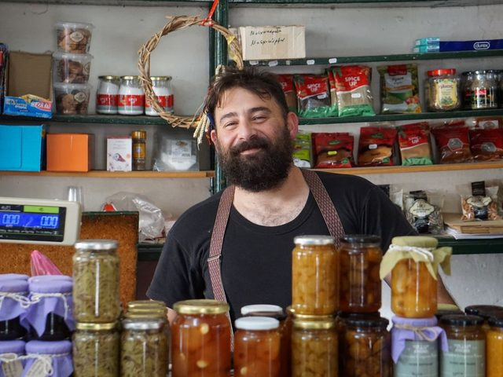

VOCABULARY · 主題 2000 字 UNIT 23
Occupations．職業
30 個和工作、職業有關的字。很多職業是「動作＋-er／-or」（drive → driver、act → actor），也有 -man 結尾、複數變 -men 的字。
共 30 個單字．點 🔊 聽發音
1actorn.
演員；男演員
act（演）＋-or
The actor practiced his lines every night.那位演員每天晚上練台詞。
2actressn.
女演員
複數 actresses
She became a famous actress at the age of twenty.她二十歲就成了有名的女演員。

3bossn.
老闆；主人
複數 bosses
My boss lets us go home early on Fridays.我老闆星期五讓我們早點回家。
4businessmann.
生意人；企業家
複數 businessmen
The businessman flies to Japan twice a month.那位生意人一個月飛日本兩次。
5clerkn.
職員；店員
The clerk at the counter helped me find my size.櫃台店員幫我找到我的尺寸。
6cookn.
廚師
也當動詞「煮」；cooker 是「炊具」，不是廚師
The cook in this restaurant makes great fried rice.這家餐廳的廚師炒飯做得很棒。

7dentistn.
牙醫
Visit the dentist twice a year to check your teeth.一年要看兩次牙醫檢查牙齒。

8doctorn.
醫生；博士
縮寫 Dr.
The doctor told me to drink more water.醫生叫我多喝水。
9drivern.
司機；駕駛
drive（開車）＋-r
The bus driver said hello to every student.公車司機和每個學生打招呼。
10engineern.
工程師；技師
The engineer is fixing the computer system.工程師正在修電腦系統。

11farmern.
農夫；農民
farm（農場）＋-er
The farmer grows rice and corn.那位農夫種稻米和玉米。

12fishermann.
漁夫；漁民
複數 fishermen
The fisherman goes out to sea before sunrise.漁夫在日出前出海。
13housewifen.
家庭主婦
複數 housewives
My aunt is a housewife and takes care of three kids.我阿姨是家庭主婦，照顧三個孩子。

14lawyern.
律師
law（法律）＋-yer
You should talk to a lawyer before you sign it.你簽名之前應該先問律師。
15mailmann.
郵差
複數 mailmen；現在常說 mail carrier
The mailman brings letters every morning.郵差每天早上送信來。

16nursen.
護士
The nurse took my temperature.護士幫我量了體溫。

17police officern.
警官；警員
police 是警方（複數）；一位警察是 a police officer
A police officer showed us the way to the station.一位警察告訴我們去車站的路。
18reportern.
記者
report（報導）＋-er
The reporter asked the singer some questions.記者問了歌手幾個問題。

19salesmann.
推銷員；業務員
複數 salesmen
The salesman showed us three kinds of phones.業務員給我們看了三種手機。

20secretaryn.
秘書
複數 secretaries
The secretary answers the phone for the boss.秘書幫老闆接電話。

21shopkeepern.
店主；老闆
shop（店）＋keeper（看管的人）
The shopkeeper knows every kid on this street.那位店老闆認識這條街上每個小孩。

22singern.
歌手
sing（唱）＋-er
She wants to be a singer when she grows up.她長大想當歌手。

23soldiern.
士兵；軍人
The soldiers helped people after the typhoon.颱風過後軍人幫忙災民。

24waitern.
（男）服務生
The waiter brought us the menu.服務生拿菜單給我們。

25waitressn.
（女）服務生
複數 waitresses
The waitress asked what we wanted to drink.女服務生問我們要喝什麼。
26workern.
工人
work（工作）＋-er
The workers are building a new bridge.工人們正在蓋一座新橋。
27writern.
作家
write（寫）＋-r
J.K. Rowling is a famous writer.J.K. 羅琳是一位有名的作家。
28businessn.
生意；企業；公司
做生意的事不可數；公司可數
My uncle runs a small business in Tainan.我叔叔在臺南經營一家小公司。

29jobn.
工作
可數：a job、two jobs
My sister found a part-time job at a bookstore.我姊姊在書店找到一份兼職工作。

30workn./v.
工作；作品
工作不可數（a lot of work）；作品可數
I have a lot of work to do today.我今天有很多工作要做。
FOCUS
職業字怎麼來的
| 規則 | 例子 |
|---|---|
| 動詞＋-er | drive → driver、sing → singer、report → reporter、write → writer、work → worker |
| 名詞＋-er | farm → farmer、law → lawyer |
| 動詞＋-or | act → actor |
| …＋-man（複數 -men） | businessman、fisherman、mailman、salesman |
| 女性：-ess | actor → actress、waiter → waitress |
注意：cook 本身就是「廚師」，cooker 是「炊具、電鍋」。
FOCUS
特別的複數
| 單數 | 複數 |
|---|---|
| businessman | businessmen |
| fisherman | fishermen |
| housewife | housewives |
| secretary | secretaries |
| actress / waitress / boss | actresses / waitresses / bosses |
-man → -men；-fe → -ves；子音＋y → -ies；-ss → -sses。
FOCUS
問職業、job 和 work
| 說法 | 中文 |
|---|---|
| What does your father do? — He is an engineer. | 你爸爸做什麼工作？——他是工程師。 |
| What do you want to be? — I want to be a doctor. | 你想當什麼？——我想當醫生。 |
| She has a job. / She has two jobs. | 她有一份工作。／她有兩份工作。（job 可數） |
| I have a lot of work. | 我有很多工作。（work 不可數） |
說職業要加 a／an：He is a nurse. / She is an actress.